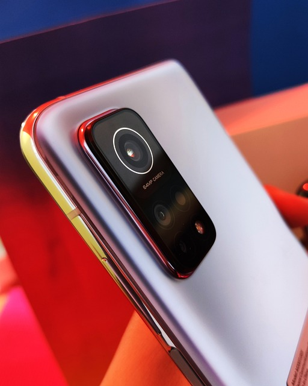

Xiaomi - Inovação e Qualidade!
Postado em 24 e julho de 2023 A Xiaomi é uma marca de tecnologia que tem conquistado rapidamente o coração de milhões de consumidores em todo o mundo, especialmente no mercado de celulares. Com uma combinação impressionante de inovação, desempenho e preços acessíveis, os celulares da Xiaomi têm sido considerados verdadeiros "queridinhos" entre os entusiastas de tecnologia. Nesta postagem, vamos explorar o que torna os celulares da Xiaomi tão especiais e como eles se destacam no cenário competitivo da indústria de smartphones.
Uma das principais vantagens dos celulares da Xiaomi é a oferta de alto desempenho a preços competitivos. A empresa conseguiu encontrar um equilíbrio único entre especificações robustas, processadores potentes e uma experiência suave do sistema operacional, proporcionando uma ótima relação custo-benefício para os consumidores.
Os celulares da Xiaomi rodam o MIUI, uma interface personalizada baseada no sistema operacional Android. O MIUI é conhecido por sua aparência elegante, recursos adicionais e atualizações regulares. Ele oferece uma experiência de usuário única, com opções de personalização e uma ampla variedade de recursos adicionais para otimizar a experiência do usuário.
iPhone 7 - Capturando Momentos.
Postado em 17 e julho de 2023
A Apple sempre se destacou por suas inovações tecnológicas, e a câmera do iPhone 7 não foi exceção. Lançado em 2016, esse smartphone trouxe melhorias significativas em relação aos modelos anteriores, oferecendo aos usuários uma experiência fotográfica notável. Nesta postagem, vamos explorar as principais características da câmera do iPhone 7 e como ela revolucionou a fotografia móvel.
Equipado com uma câmera traseira de 12 megapixels e um sensor aprimorado, o iPhone 7 ofereceu imagens mais nítidas e detalhadas do que nunca. A combinação de pixels maiores e melhor sensibilidade à luz resultou em fotos de alta qualidade, mesmo em condições de pouca luz, permitindo que os usuários capturassem momentos memoráveis com perfeição.
Uma das inovações mais notáveis do iPhone 7 foi a incorporação da estabilização óptica de imagem (OIS) na câmera traseira. Esse recurso foi um divisor de águas para a fotografia móvel, eliminando o tremido da câmera durante a captura de fotos e vídeos. O OIS permitiu que os usuários obtivessem resultados mais nítidos e com menos borrões, especialmente em situações de movimento ou em ambientes com pouca luz.
Redes Sociais - Mundo Moderno!
Postado em 5 e julho de 2023
As redes sociais têm sido uma das maiores revoluções na era da tecnologia, transformando a maneira como nos comunicamos, compartilhamos informações e interagimos uns com os outros. Nesta postagem, vamos explorar a crescente importância das redes sociais no mundo moderno e como elas impactaram nossa sociedade, cultura, negócios e relacionamentos.
As redes sociais romperam as barreiras geográficas, permitindo que pessoas de diferentes partes do mundo se conectem e se comuniquem instantaneamente. Essa conexão global tem sido fundamental para construir comunidades globais e promover a compreensão cultural, ampliando nossos horizontes e nos aproximando de pessoas com interesses e perspectivas semelhantes.
As redes sociais têm sido uma ferramenta poderosa para o ativismo e o empoderamento social. Movimentos como o #MeToo e protestos políticos têm ganhado força e alcance graças à mobilização nas redes sociais, permitindo que vozes antes ignoradas sejam ouvidas e que mudanças significativas sejam impulsionadas.
POSTAGENS RECENTES
As 10 Principais Tendências Tecnológicas para 2023: Explore as inovações mais quentes que estão moldando o cenário tecnológico neste ano.
Saiba mais...Descubra como a inteligência artificial está impactando positivamente o setor de saúde e suas aplicações inovadoras.
Saiba mais...